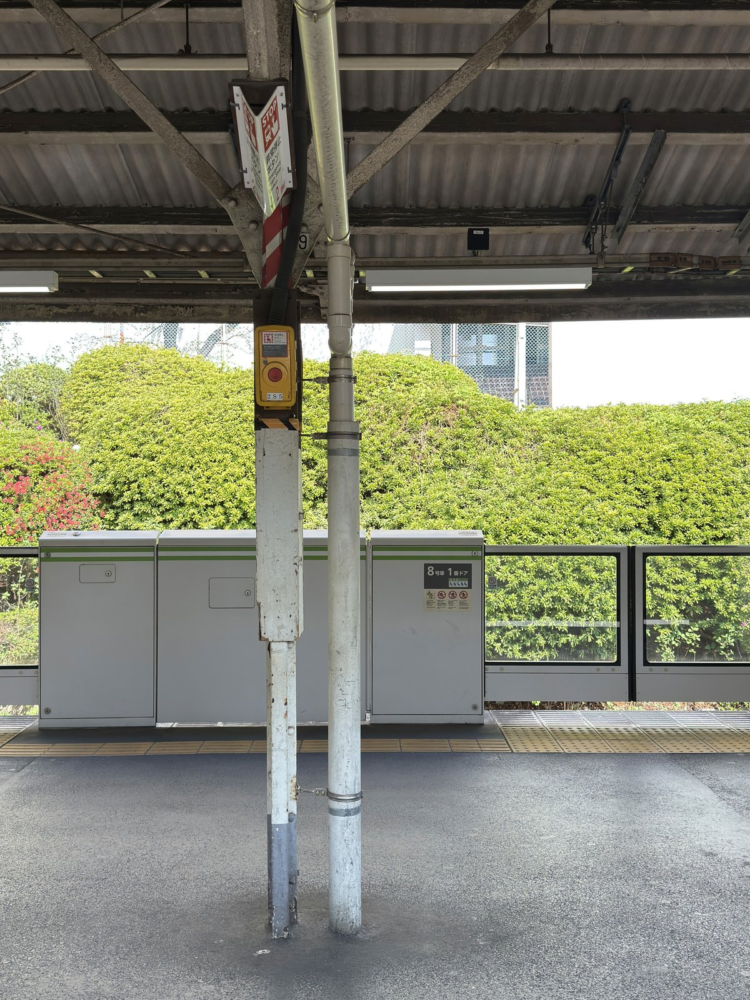

While spending few more days in Tokyo, I had a few different experiences that somehow shared something in it. This is a compilation of those experiences and observations.
Stations

The subway car door opened at one station on our way to Shibuya. In those few seconds, I saw outside and there was a bush of green leaves flowing along with the breeze as the melody played for the impending departure. I snapped a photo, knowing somehow this scene would be one of my favorites.
The worn-out pillars and the soulless sound of urban life… but the lively green leaves dancing with the fresh breeze as if certain simple things always persist around. This is how I started feeling about the life and society here and now that feeling lives in this photo. And that moment would never be replicated.
Another breakfast place
On the last day in Nippori, I went to a different breakfast place before heading down to Kyoto. Lots of Japanese restaurants showcase their ingredient sourcing, but "Hagiso" did more. They prepared a folded paper that not only listed the ingredients and their origins but told a little story about each dish on the plate. The degree of sincere intention and effort was once again inspiring to me and I told them I loved the philosophy so much. They were surprised and also genuinely happy to hear that.
I brought this piece all the way back home and it's now on my desk.
Shinkansen cleaners
Me and my parents were now headed to Kyoto and waiting for our Shinkansen train. (Ah, I miss you, Nozomi N700)
The train arrived, then they spent some time cleaning the cars. I could see the cleaners and they were thoroughly cleaning everywhere without throwing trash bags around or making any noise - all in uniform and gloves. As they were finishing up and leaving the train cars, they were smiling at and laughing with each other. I'm well aware of the brutal work culture in Japan as well as the pay scale. Even without touching on that subject, cleaners/janitors are generally paid less despite the importance of their labor. But what struck me was the way they treated their work. I had respect for them as I was watching them and it made me realize: respect and pride don't just happen magically.
They're built, quietly and sincerely, and found within yourself.